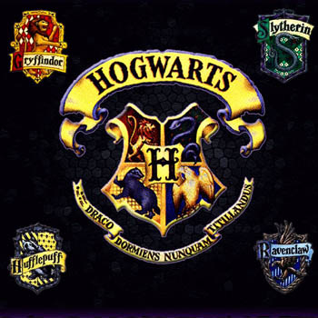

Hogwart
Hogwarts School of Witchcraft and Wizardry, shortened Hogwarts, is a fictional British school of magic for students aged eleven to eighteen, and is the primary setting for the first six books in J.K. Rowling's Harry Potter series.
Rowling has suggested that she may have inadvertently taken the name from the hogwort plant (Croton capitatus), which she had seen at Kew Gardens some time before writing the series, although the names "The Hogwarts" and "Hoggwart" appear in the 1954 Nigel Molesworth book How To Be Topp by Geoffrey Willans.
A huge, rambling, quite scary-looking castle, with a jumble of towers and battlements. Like the Weasleys' house, it isn't a building that Muggles could build, because it is supported by magic.
In the novels, Hogwarts is somewhere in Scotland (The film Prisoner of Azkaban says that Dufftown is near.) The school has numerous charms and spells on and around it that make it impossible for a Muggle (i.e. a non-magical person) to locate it. Such people cannot see the school; rather, they see only ruins and several warnings of danger. The castle has extensive grounds with sloping lawns, flowerbeds and vegetable patches, a loch (called The Black Lake), a large dense forest (called the Forbidden Forest), several greenhouses and other outbuildings, and a full-size Quidditch pitch.
There is also an owlery, which houses all the owls owned by the school and those owned by students. Some rooms in the school tend to "move around", and so do the stairs in the grand staircase.Witches and wizards cannot Apparate or Disapparate in Hogwarts grounds, except when the Headmaster lifts the enchantment, whether only in certain areas or for the entire campus, so as to make the school less vulnerable when it serves the headmaster to allow Apparition.
Electricity and electronic devices are not found at Hogwarts. In Harry Potter and the Goblet of Fire, Hermione indicates that due to the high levels of magic, "substitutes for magic (that) Muggles use" such as computers, radar and electricity "go haywire" around Hogwarts. Radios however, make an exception. Rowling explains this by saying that the radios are not powered by electricity and are powered by magic.